Tutorial¶
This is a simple tutorial demonstrating the main functionalities of pyqha. The examples below show how to use the package to perform the most common tasks. The code examples can be found in the directory examples of the package and can be run either as interactive sessions in your Python intepreter or as scripts.
The tutorial is based on the following examples:
| Example n. | Description |
|---|---|
| 1 | Fit  for a cubic (isotropic) system using Murnaghan EOS for a cubic (isotropic) system using Murnaghan EOS |
| 2 | Fit 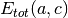 for an hexagonal (anisotropic) system using a polynomial |
| 3 | Calculate the harmonic thermodynamic properties (ZPE, vibrational energy, Helmholtz energy, entropy and heat capacity from a phonon DOS |
| 4 | Calculate the harmonic thermodynamic properties as in the previous examples from several phonon DOS |
| 5 | A quasi-harmonic calculation for a cubic (isotropic) system using Murnaghan EOS |
| 6 | A quasi-harmonic calculation for an hexagonal (anisotropic) system using a quadratic polynomial |
| 7 | A quasi-static calculation for the elastic tensor of an hexagonal (anisotropic) system using a quadratic polynomial |
| 8 | Numerical issues in quasi-harmonic calculations |
Several simplified plotting functions are available in pyqha and are used in the following tutorial to show what you can plot.
Note however that all plotting functions need the matplotlib library, which must be available on your system and can be used to further taylor your plot.
Fitting the total energy (examples 1 and 2)¶
The simplest task you can do with pyqha is to fit the total energy as a function of volume (example1) or lattice parameters values 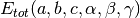 (example2). In the former case, you can use
an equation of state (EOS) such as Murnaghan’s or similar. In the latter case, you must use polynomials. Currently the Murnaghan EOS and quadratic and quartic polynomials are implemented in pyqha. Besides, only 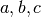 lattice parameters can be handled. This includes cubic, hexagonal, tetragonal and orthorombic systems.
Let’s start with the simpler case where we want to fit . This is the case of isotropic cubic systems (simple cubic, body centered cubic, face centered cubic) or systems which can be approximated as isotropic (for example an hexagonal system with nearly constant 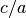 ratio).
from pyqha import fitEtotV, plot_EV
fin = "./EtotV.dat" # file with the total energy data E(V)
V, E, a, chi2 = fitEtotV(fin) # fits the E(V) data, returns the coefficients a and
# the chi squared chi2
fig1 = plot_EV(V,E,a) # plot the E(V) data and the fitting line
fig1.savefig("figure_1.png")
The fitEtotV() needs in input a file with two columns: the first with the volumes (in  ), the second with energies (in
), the second with energies (in  ). It returns the volumes V and energies E from the input file plus the fitting coefficients a and the
). It returns the volumes V and energies E from the input file plus the fitting coefficients a and the  chi. The fitting results are also written in details on the stdout:
chi. The fitting results are also written in details on the stdout:
# Murnaghan EOS chi squared= 6.3052568895e-09
# Etotmin= -1.6668753460e+03 Ry Vmin= 1.9256061524e+02 a.u.^3 B0= 3.9507615923e+03 kbar dB0/dV= 4.7879823925e+00
################################################################################
('# V *a.u.^3)', '\t\t', 'Etot', ' (Ry)\t\t', 'Etotfit', ' (Ry)\t\t', 'Etot-Etotfit (Ry)\tP (kbar)')
('1.7119697047e+02', '\t', '-1.6668351807e+03\t -1.6668351587e+03\t -2.2057946126e-05\t 6.2382144794e+02')
('1.7637989181e+02', '\t', '-1.6668536038e+03\t -1.6668536431e+03\t 3.9279193061e-05\t 4.3100002530e+02')
('1.8166637877e+02', '\t', '-1.6668660570e+03\t -1.6668660710e+03\t 1.4066826679e-05\t 2.6537032641e+02')
('1.8705745588e+02', '\t', '-1.6668731355e+03\t -1.6668731118e+03\t -2.3774691499e-05\t 1.2288570223e+02')
('1.9255414767e+02', '\t', '-1.6668753764e+03\t -1.6668753460e+03\t -3.0400133255e-05\t 1.3270797876e-01')
('1.9815747866e+02', '\t', '-1.6668732871e+03\t -1.6668732783e+03\t -8.8363487976e-06\t -1.0577273936e+02')
('2.0386847338e+02', '\t', '-1.6668673220e+03\t -1.6668673472e+03\t 2.5137771445e-05\t -1.9727140701e+02')
('2.0968815635e+02', '\t', '-1.6668579007e+03\t -1.6668579345e+03\t 3.3763105193e-05\t -2.7643217490e+02')
('2.1561755211e+02', '\t', '-1.6668454001e+03\t -1.6668453730e+03\t -2.7177809670e-05\t -3.4501143525e+02')
Optionally, you can plot the results with the plot_EV(). The original data are represented as points. If a!=None, a line with the fitting EOS will also be plotted. The output plot looks like the following:
{kind=link}
The second example shows how to fit the total energy of an hexagonal system, i.e. as a function of the lattice parameters 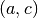. The input file (fin) contains three columns, the first two with the (in  ) and the third one with the energies (in ). Note that if the original data are as 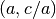, as often reported, you must convert the values into
) and the third one with the energies (in ). Note that if the original data are as 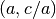, as often reported, you must convert the values into  values in the input file.
The
values in the input file.
The fitEtot() reads the input file and performs the fit using either a quadratic or quartic polynomial (as specified by the parameter fitype).
fin = "./Etot.dat" # contains the input energies
# fits the energies and returns the coeffients a0 and the chi squared chia0
# the fit is done with a quartic polynomial
celldmsx, Ex, a0, chia0, mincelldms, fmin = fitEtot(fin,fittype="quartic",guess=[5.12374914,0.0,8.19314311,0.0,0.0,0.0])
# 3D plot only with fitted energy
fig1 = plot_Etot(celldmsx,Ex=None,n=(5,0,5),nmesh=(50,0,50),fittype="quartic",ibrav=4,a=a0)
fig1.savefig("figure_1.png")
# 3D plot fitted energy and points
fig2 = plot_Etot(celldmsx,Ex,n=(5,0,5),nmesh=(50,0,50),fittype="quartic",ibrav=4,a=a0)
fig2.savefig("figure_2.png")
# 2D contour plot with fitted energy
fig3 = plot_Etot_contour(celldmsx,nmesh=(50,0,50),fittype="quartic",ibrav=4,a=a0)
fig3.savefig("figure_3.png")
The output of the fitting function is:
quartic fit
('a', '\t\t\t', 'c', '\t\t\t', 'Etot', '\t\t\t', 'Etotfit', '\t\t\t', 'Etot-Etotfit')
('5.1043155930e+00', '\t', '7.8471807981e+00', '\t', '-1.6668528744e+03', '\t', '-1.6668528745e+03', '\t', '7.0725036494e-08')
('5.1543155930e+00', '\t', '7.9240488978e+00', '\t', '-1.6668649001e+03', '\t', '-1.6668649002e+03', '\t', '9.8750206234e-08')
('5.2043155930e+00', '\t', '8.0009169975e+00', '\t', '-1.6668716783e+03', '\t', '-1.6668716776e+03', '\t', '-7.7131721810e-07')
('5.2543155930e+00', '\t', '8.0777850972e+00', '\t', '-1.6668737355e+03', '\t', '-1.6668737365e+03', '\t', '9.2776986094e-07')
('5.3043155930e+00', '\t', '8.1546531969e+00', '\t', '-1.6668715550e+03', '\t', '-1.6668715547e+03', '\t', '-3.2629236557e-07')
('5.1043155930e+00', '\t', '7.9492671099e+00', '\t', '-1.6668606004e+03', '\t', '-1.6668606001e+03', '\t', '-2.1225582714e-07')
('5.1543155930e+00', '\t', '8.0271352096e+00', '\t', '-1.6668700587e+03', '\t', '-1.6668700591e+03', '\t', '3.0630963010e-07')
('5.2043155930e+00', '\t', '8.1050033093e+00', '\t', '-1.6668744794e+03', '\t', '-1.6668744800e+03', '\t', '6.7416499405e-07')
('5.2543155930e+00', '\t', '8.1828714090e+00', '\t', '-1.6668743826e+03', '\t', '-1.6668743814e+03', '\t', '-1.2613072613e-06')
('5.3043155930e+00', '\t', '8.2607395087e+00', '\t', '-1.6668702280e+03', '\t', '-1.6668702285e+03', '\t', '4.9947925618e-07')
('5.1043155930e+00', '\t', '8.0513534218e+00', '\t', '-1.6668660570e+03', '\t', '-1.6668660572e+03', '\t', '2.5535950954e-07')
('5.1543155930e+00', '\t', '8.1302215215e+00', '\t', '-1.6668731355e+03', '\t', '-1.6668731348e+03', '\t', '-7.0765509008e-07')
('5.2043155930e+00', '\t', '8.2090896212e+00', '\t', '-1.6668753764e+03', '\t', '-1.6668753765e+03', '\t', '1.0862777344e-08')
('5.2543155930e+00', '\t', '8.2879577209e+00', '\t', '-1.6668732871e+03', '\t', '-1.6668732880e+03', '\t', '8.4404246081e-07')
('5.3043155930e+00', '\t', '8.3668258206e+00', '\t', '-1.6668673220e+03', '\t', '-1.6668673216e+03', '\t', '-4.0985673877e-07')
('5.1043155930e+00', '\t', '8.1534397336e+00', '\t', '-1.6668694343e+03', '\t', '-1.6668694339e+03', '\t', '-4.5153024075e-07')
('5.1543155930e+00', '\t', '8.2333078333e+00', '\t', '-1.6668743061e+03', '\t', '-1.6668743073e+03', '\t', '1.2780792531e-06')
('5.2043155930e+00', '\t', '8.3131759330e+00', '\t', '-1.6668745384e+03', '\t', '-1.6668745377e+03', '\t', '-7.0226747084e-07')
('5.2543155930e+00', '\t', '8.3930440327e+00', '\t', '-1.6668706178e+03', '\t', '-1.6668706173e+03', '\t', '-4.6083209782e-07')
('5.3043155930e+00', '\t', '8.4729121324e+00', '\t', '-1.6668629842e+03', '\t', '-1.6668629845e+03', '\t', '3.4305685404e-07')
('5.1043155930e+00', '\t', '8.2555260455e+00', '\t', '-1.6668709188e+03', '\t', '-1.6668709191e+03', '\t', '3.3864898796e-07')
('5.1543155930e+00', '\t', '8.3363941452e+00', '\t', '-1.6668737584e+03', '\t', '-1.6668737574e+03', '\t', '-9.7452812042e-07')
('5.2043155930e+00', '\t', '8.4172622449e+00', '\t', '-1.6668721346e+03', '\t', '-1.6668721354e+03', '\t', '7.8953144111e-07')
('5.2543155930e+00', '\t', '8.4981303446e+00', '\t', '-1.6668665315e+03', '\t', '-1.6668665315e+03', '\t', '-4.8681386033e-08')
('5.3043155930e+00', '\t', '8.5789984443e+00', '\t', '-1.6668573689e+03', '\t', '-1.6668573688e+03', '\t', '-1.0538019524e-07')
Fitted polynomial is:
p(x1,x2) = -1291.10429456 + -184.969221276 * x1 + 42.2676103527 * x1^2 + -4.81052197937 * x1^3 + 0.188178329491 * x1^4 +
-49.1590620388 *x2 + 5.34145510286 *x2^2 + -0.245662970361 *x2^3 + -0.000328650634003 *x2^4 +
8.48734670683 *x1*x2 + -0.67806386411 *x1*x2^2 + 0.0444127765503 *x1*x2^3 + -0.393401452901 *x1^2*x2 + -0.0458527834065 *x1^2*x2^2 +
0.0705006802514 *x1^3*x2
('Chi squared: ', 9.8189738184091843e-12, '\n')
('Minimun quartic: ', array([ 5.20422334, 0. , 8.20918742, 0. , 0. , 0. ]), '\tEnergy at the minimum: -1.66687537646402097380e+03\n')
Optionally, you can use the functions plot_Etot(), plot_Etot_contour() to create 3D or contour plots of the fitted energy over the grid , including or not the original energy points:
 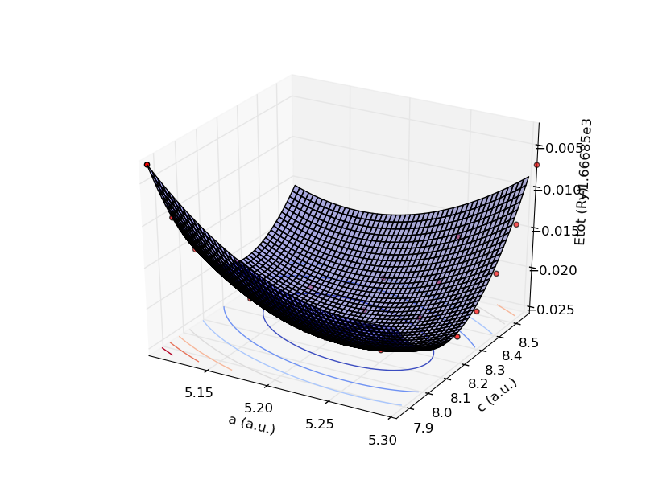
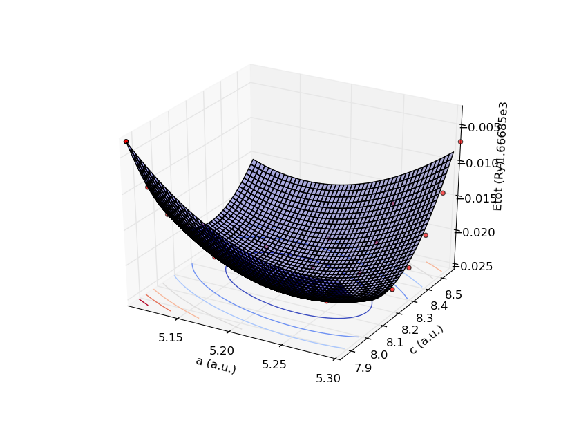
{kind=link}

Computing thermal properties from phonon DOS (examples 3 and 4)¶
pyqha can calculate the vibrational properties of your system from the phonon DOS in the harmonic approximation as shown in example3. The DOS file must be a two columns one, the first column being the energy (in ) and the second column being the density of states (in 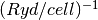).
fin = "./dos.dat"
fout = "./thermo"
TT = gen_TT(1,1000,0.5) # create a numpy array of temperatures from 1 to 1000 step 0.5
E, dos = read_dos(fin) # read the dos file. It returns the energies and dos values.
T, Evib, Svib, Cvib, Fvib, ZPE, modes = compute_thermo(E/RY_TO_CMM1,dos*RY_TO_CMM1,TT)
write_thermo(fout,T, Evib, Fvib, Svib, Cvib, ZPE, modes)
from pyqha import simple_plot_xy, multiple_plot_xy
# plot the original phonon DOS
fig1 = simple_plot_xy(E,dos,xlabel="E (Ryd/cell)",ylabel="phonon DOS (Ry/cell)^{-1}")
fig1.savefig("figure_1.png")
# create several plots for the thermodynamic quantities computed
fig2 = simple_plot_xy(T,Evib,xlabel="T (K)",ylabel="Evib (Ry/cell)")
fig2.savefig("figure_2.png")
fig3 = simple_plot_xy(T,Fvib,xlabel="T (K)",ylabel="Fvib (Ry/cell)")
fig3.savefig("figure_3.png")
fig4 = simple_plot_xy(T,Svib,xlabel="T (K)",ylabel="Svib (Ry/cell/K)")
fig4.savefig("figure_4.png")
fig5 = simple_plot_xy(T,Cvib,xlabel="T (K)",ylabel="Cvib (Ry/cell/K)")
fig5.savefig("figure_5.png")
The output produced by the function compute_thermo() is stored in the variables T, Evib, Svib, Cvib, Fvib, ZPE, modes and can be written in a file using the function write_thermo(). This output file is as:
# total modes from dos = 5.9999726114e+00
# ZPE = 5.6214272319e-03 Ry/cell
# Multiply by 13.6058 to have energies in eV/cell etc..
# Multiply by 13.6058 x 23060.35 = 313 754.5 to have energies in cal/(N mol).
# Multiply by 13.6058 x 96526.0 = 1 313 313 to have energies in J/(N mol).
# N is the number of formula units per cell.
#
# T (K) Evib (Ry/cell) Fvib (Ry/cell) Svib (Ry/cell/K) Cvib (Ry/cell/K)
1.0000000000e+00 5.6214272416e-03 5.6214271698e-03 7.1803604634e-11 2.7457378670e-11
1.5000000000e+00 5.6214272660e-03 5.6214271296e-03 9.0971071082e-11 7.6156598111e-11
2.0000000000e+00 5.6214273247e-03 5.6214270765e-03 1.2411743622e-10 1.6670823649e-10
2.5000000000e+00 5.6214274420e-03 5.6214270023e-03 1.7586528823e-10 3.1294495785e-10
3.0000000000e+00 5.6214276492e-03 5.6214268967e-03 2.5083680991e-10 5.2875068522e-10
3.5000000000e+00 5.6214279847e-03 5.6214267469e-03 3.5365843213e-10 8.2803005242e-10
4.0000000000e+00 5.6214284935e-03 5.6214265377e-03 4.8896152188e-10 1.2247123119e-09
4.5000000000e+00 5.6214292279e-03 5.6214262517e-03 6.6138346588e-10 1.7327611278e-09
5.0000000000e+00 5.6214302472e-03 5.6214258693e-03 8.7556952905e-10 2.3661903162e-09
5.5000000000e+00 5.6214316174e-03 5.6214253684e-03 1.1361755892e-09 3.1390850039e-09
6.0000000000e+00 5.6214334118e-03 5.6214247246e-03 1.4478717445e-09 4.0656278651e-09
6.5000000000e+00 5.6214357110e-03 5.6214239112e-03 1.8153467817e-09 5.1601305330e-09
7.0000000000e+00 5.6214386024e-03 5.6214228992e-03 2.2433135214e-09 6.4370706688e-09
7.5000000000e+00 5.6214421809e-03 5.6214216571e-03 2.7365150966e-09 7.9111356177e-09
8.0000000000e+00 5.6214465489e-03 5.6214201510e-03 3.2997322753e-09 9.5972742802e-09
8.5000000000e+00 5.6214518161e-03 5.6214183448e-03 3.9377920199e-09 1.1510759902e-08
9.0000000000e+00 5.6214581001e-03 5.6214161999e-03 4.6555775947e-09 1.3667267917e-08
9.5000000000e+00 5.6214655265e-03 5.6214136752e-03 5.4580406777e-09 1.6082974484e-08
1.0000000000e+01 5.6214742291e-03 5.6214107269e-03 6.3502160901e-09 1.8774682469e-08
1.0500000000e+01 5.6214843502e-03 5.6214073091e-03 7.3372398855e-09 2.1759981704e-08
1.1000000000e+01 5.6214960411e-03 5.6214033730e-03 8.4243715943e-09 2.5057449144e-08
1.1500000000e+01 5.6215094629e-03 5.6213988672e-03 9.6170213626e-09 2.8686891747e-08
1.2000000000e+01 5.6215247869e-03 5.6213937375e-03 1.0920782549e-08 3.2669631041e-08
1.2500000000e+01 5.6215421953e-03 5.6213879269e-03 1.2341470051e-08 3.7028823823e-08
1.3000000000e+01 5.6215618826e-03 5.6213813755e-03 1.3885164240e-08 4.1789809033e-08
1.3500000000e+01 5.6215840567e-03 5.6213740202e-03 1.5558259988e-08 4.6980467173e-08
1.4000000000e+01 5.6216089398e-03 5.6213657946e-03 1.7367519841e-08 5.2631576208e-08
1.4500000000e+01 5.6216367707e-03 5.6213566288e-03 1.9320130039e-08 5.8777146866e-08
1.5000000000e+01 5.6216678056e-03 5.6213464493e-03 2.1423757831e-08 6.5454720686e-08
1.5500000000e+01 5.6217023209e-03 5.6213351785e-03 2.3686608350e-08 7.2705615875e-08
1.6000000000e+01 5.6217406143e-03 5.6213227346e-03 2.6117479280e-08 8.0575108690e-08
1.6500000000e+01 5.6217830073e-03 5.6213090314e-03 2.8725811574e-08 8.9112541358e-08
The first line is the simple integral of the input dos. It must be approximately equal to 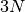, where N is the number of atoms in the cell. In the present case (h.c.p. Os) it is equal to 6. The second line shows the Zero Point Energy (ZPE). After a few comments lines, the vibrational energy (Evib), Helmholtz energy (Fvib), entropy (Svib) and heat capacity (Cvib) are written as a function of temperature. All quantities are calculated in the harmonic approximation, i.e. for fixed volume (and lattice parameters).
The original dos is plotted as:
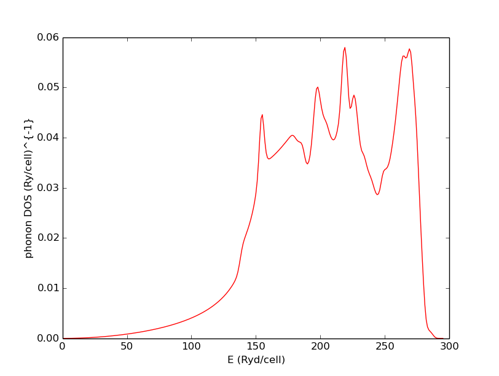{kind=link}
The calculated thermodynaminc functions are plotted as:


 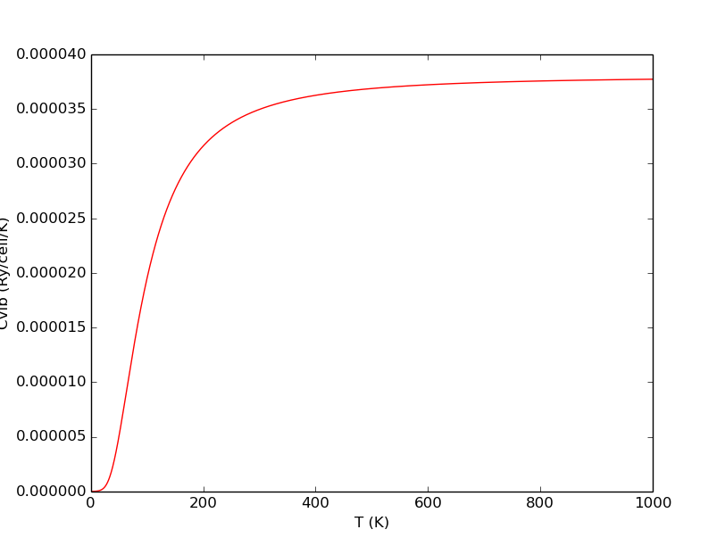
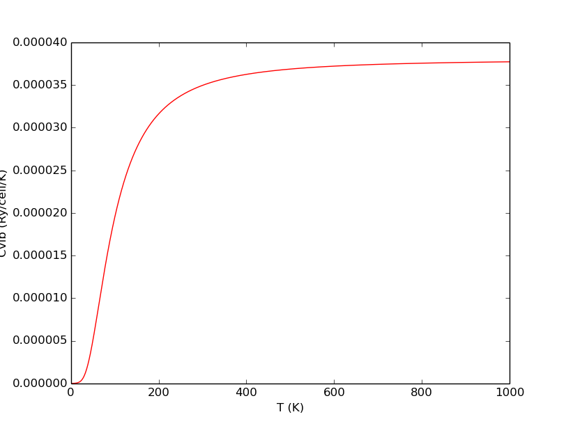
{kind=link}
The following code (example4) shows how multiple dos files can be handled, a step which is preliminary to a quasi-harmonic calculation. The dos are for different volumes (for hexagonal Os).
from pyqha import gen_TT, read_dos_geo, compute_thermo_geo
from pyqha import simple_plot_xy, multiple_plot_xy
fin = "dos_files/output_dos.dat.g" # base name for the dos files (numbers will be added as postfix)
fout = "thermo" # base name for the output files (numbers will be added as postfix)
ngeo = 9
gE, gdos = read_dos_geo(fin,ngeo) # read ngeo=9 dos files
# plot the first 5 phonon dos
fig1 = multiple_plot_xy(gE[:,0:5],gdos[:,0:5],xlabel="E (Ryd/cell)",ylabel="phonon DOS (cell/Ryd)")
fig1.savefig("figure_1.png")
TT =gen_TT(1,1000) # generate the numpy array of temperatures for which the properties will be calculated
# compute the thermodynamic properties for all ngeo dos files and write them in fout+"i" files, where is an int from 1 to ngeo
T, ggEvib, ggFvib, ggSvib, ggCvib, ggZPE, ggmodes = compute_thermo_geo(fin,fout,ngeo,TT)
# plot the vibrational Helmholtz energy for the first 5 phonon dos
fig2 = multiple_plot_xy(T,ggFvib[:,0:5],xlabel="T (K)",ylabel="Cvib (Ry/cell/K")
fig2.savefig("figure_2.png")
# plot the vibrational entropy for the first 5 phonon dos
fig3 = multiple_plot_xy(T,ggSvib[:,0:5],xlabel="T (K)",ylabel="Cvib (Ry/cell/K")
fig3.savefig("figure_3.png")
# plot the vibrational heat capacity for the first 5 phonon dos
fig4 = multiple_plot_xy(T,ggCvib[:,0:5],xlabel="T (K)",ylabel="Cvib (Ry/cell/K")
fig4.savefig("figure_4.png")
The first 5 phonon dos are plotted as (color order is: black, red, blue, green, cyan for increasing volumes):
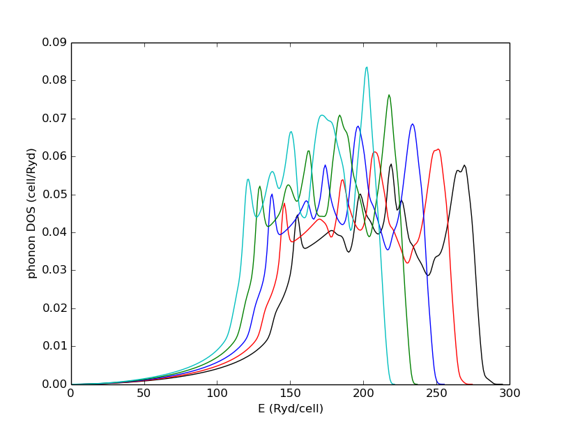{kind=link}
The corresponding vibrational Helmoltz energies, entropies and heat capacity are plotted as:


Computing quasi-harmonic properties (examples 5 and 6)¶
Here we show how to do a full quasi-harmonic calculation starting from the 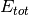 at 0 K and phonon DOS. First, we show an example using the Murnaghan EOS, having and the corresponding DOS, then using a quartic polynomial on the full grid for an hexagonal cell.
Here is the code in the Murnaghan case:
from pyqha import RY_KBAR
from pyqha import gen_TT, read_dos_geo, compute_thermo_geo, read_thermo, rearrange_thermo, fitFvibV, write_xy
from pyqha import simple_plot_xy, multiple_plot_xy
# this part is for calculating the thermodynamic properties from the dos
fdos="dos_files/output_dos.dat.g" # base name for the dos files (numbers will be added as postfix)
fthermo = "thermo" # base name for the output files (numbers will be added as postfix)
ngeo = 9 # this is the number of volumes for which a dos has been calculated
TT =gen_TT(1,1000) # generate the numpy array of temperatures for which the properties will be calculated
T, Evib, Fvib, Svib, Cvib, ZPE, modes = compute_thermo_geo(fdos,fthermo,ngeo,TT)
nT = len(T)
# Alternatively, read the thermodynamic data from files, if you have already
# done the calculations. Uncomment the following 2 lines and delete the previous 3 lines
#T1, Evib1, Fvib1, Svib1, Cvib1 = read_thermo( fthermo, ngeo )
#T, T, Evib, Fvib, Svib, Cvib = rearrange_thermo( T1, Evib1, Fvib1, Svib1, Cvib1, ngeo )
fEtot = "./Etot.dat"
thermodata = nT, T, Evib, Fvib, Svib, Cvib
TT, Fmin, Vmin, B0, betaT, Cv, Cp, aT, chi = fitFvibV(fEtot,thermodata)
fig1 = simple_plot_xy(TT,Fmin,xlabel="T (K)",ylabel="Fmin (Ry/cell)")
fig2 = simple_plot_xy(TT,Vmin,xlabel="T (K)",ylabel="Vmin (a.u.^3)")
fig3 = simple_plot_xy(TT,B0,xlabel="T (K)",ylabel="B0 (kbar)")
fig4 = simple_plot_xy(TT,betaT,xlabel="T (K)",ylabel="beta")
fig5 = simple_plot_xy(TT,Cp,xlabel="T (K)",ylabel="Cp (Ry/cell/K")
fig1.savefig("figure_1.png")
fig2.savefig("figure_2.png")
fig3.savefig("figure_3.png")
fig4.savefig("figure_4.png")
fig5.savefig("figure_5.png")
# save the results in a file if you want...
write_xy("Fmin.dat",T,Fmin,"T (K)","Fmin (Ryd/cell)")
write_xy("Vmin.dat",T,Vmin,"T (K)","Vmin (a.u.^3)")
write_xy("B0.dat",T,B0*RY_KBAR,"T (K)","B0 (kbar)")
write_xy("beta.dat",T, betaT,"T (K)","Beta=1/V dV/dT (1/K)")
import numpy as np
CvCp = np.zeros((len(T),2))
CvCp[:,0] = Cv
CvCp[:,1] = Cp
fig6 = multiple_plot_xy(TT,CvCp,xlabel="T (K)",ylabel="Cv/Cp (Ry/cell/K")
fig6.savefig("figure_6.png")
print_eos_data(V,E+Fvib[i],a,chi,"E") # print full detail at each T
Note from the first line that there are some constants you can import from the module and use for unit conversions. See the documentation for more details on which ones are available.
In this example, 9 volumes are used (ngeo=9). First the harmonic thermodynamic properties are computed as in the previous example. You store these quantities in a list called thermodata. You also need to read the total energies as in example 1 from the file Etot.dat, which is taken care inside the function fitEtotV(). This is the function which is really doing the quasi-harmonic calculations, i.e. it fits a Murnaghan EOS at each T using  . It returns TT, Fmin, Vmin, B0, betaT, Cv, Cp, which are all numpy 1D arrays containing the temperatures where the calculations were done and the resulting minimun Helmholtz energy (at each T), minimun volume, isobaric bulk modulus, volume thermal expansion, constant volume and constant pressure heat capacities, respectively. These quantities correspond to 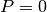.
. It returns TT, Fmin, Vmin, B0, betaT, Cv, Cp, which are all numpy 1D arrays containing the temperatures where the calculations were done and the resulting minimun Helmholtz energy (at each T), minimun volume, isobaric bulk modulus, volume thermal expansion, constant volume and constant pressure heat capacities, respectively. These quantities correspond to 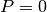.
The following lines show how to plot each quantity on a single plot (using the function simple_plot_xy()), write the results in files (using the write_xy()) and plot both Cv and Cp in a single plot (using the function multiple_plot_xy()).
If everything went well, you should get the following plots:
{kind=link}

 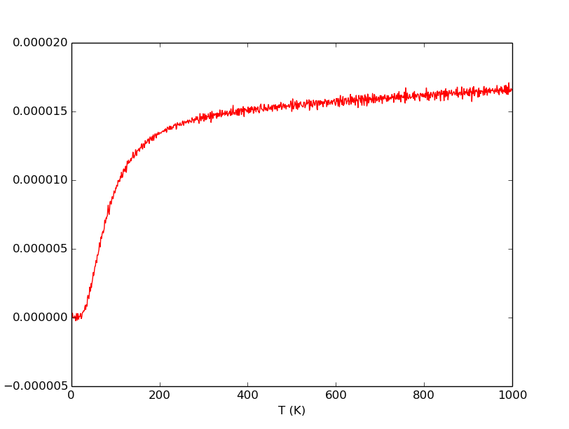
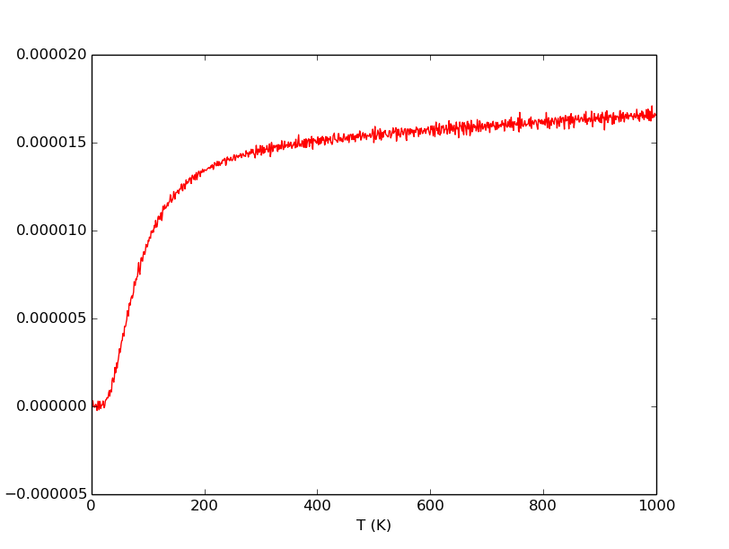
{kind=link}
 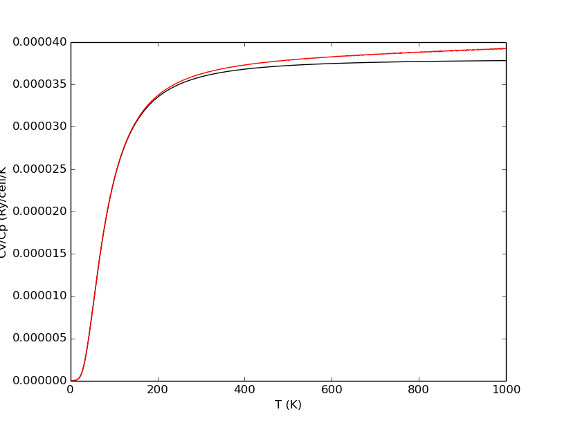
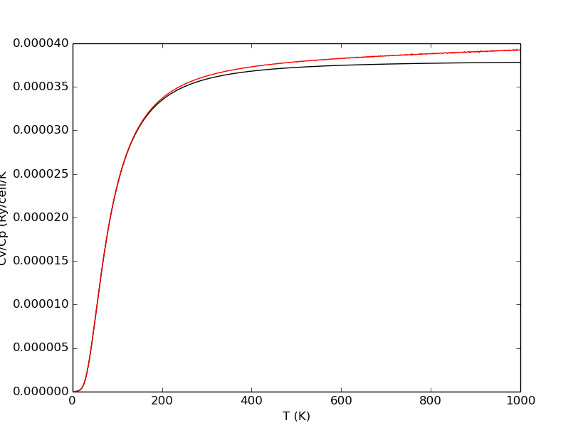
{kind=link}
In the following we show the code for a similar example of an hexagonal (anisotropic) system. The code is similar to the previous examples with a few important differences.
from pyqha import RY_KBAR
from pyqha import gen_TT, read_Etot, read_dos_geo, compute_thermo_geo, read_thermo, rearrange_thermo, fitFvib, write_celldmsT, write_alphaT
from pyqha import simple_plot_xy, plot_Etot, plot_Etot_contour
# this part is for calculating the thermodynamic properties from the dos
fdos="dos_files/output_dos.dat.g" # base name for the dos files (numbers will be added as postfix)
fthermo = "thermo" # base name for the output files (numbers will be added as postfix)
ngeo = 25 # this is the number of volumes for which a dos has been calculated
#TT =gen_TT(1,1000) # generate the numpy array of temperatures for which the properties will be calculated
#T, Evib, Fvib, Svib, Cvib, ZPE, modes = compute_thermo_geo(fdos,fthermo,ngeo,TT)
#nT = len(T)
# Alternatively, read the thermodynamic data from files if you have already
# done the calculations
T1, Evib1, Fvib1, Svib1, Cvib1 = read_thermo( fthermo, ngeo )
nT, T, Evib, Fvib, Svib, Cvib = rearrange_thermo( T1, Evib1, Fvib1, Svib1, Cvib1, ngeo )
fEtot = "./Etot.dat"
thermodata = nT, T, Evib, Fvib, Svib, Cvib
TT, Fmin, celldmsminT, alphaT, a0, chi, aT, chi = fitFvib(fEtot,thermodata,minoptions={'gtol': 1e-7})
fig1 = simple_plot_xy(TT,Fmin,xlabel="T (K)",ylabel="Fmin (Ry/cell)")
fig2 = simple_plot_xy(TT,celldmsminT[:,0],xlabel="T (K)",ylabel="a_min (a.u.)")
fig3 = simple_plot_xy(TT,celldmsminT[:,2],xlabel="T (K)",ylabel="c_min (a.u.)")
fig4 = simple_plot_xy(TT,celldmsminT[:,2]/celldmsminT[:,0],xlabel="T (K)",ylabel="c/a ")
fig5 = simple_plot_xy(TT,alphaT[:,0],xlabel="T (K)",ylabel="alpha_xx (1/K)")
fig6 = simple_plot_xy(TT,alphaT[:,2],xlabel="T (K)",ylabel="alpha_zz (1/K)")
# write a(T) and c(T) on a file
write_celldmsT("celldmminT",T,celldmsminT,ibrav=4)
# write alpha_xx(T) and alpha_zz(T) on a file
write_alphaT("alphaT",T,alphaT,ibrav=4)
# Plot several quantities at T=998+1 K as an example
celldmsx, Ex = read_Etot(fEtot) # since the fitFvib does not return Etot data, you must read them from the original file
iT=998 # this is the index of the temperatures array, not the temperature itself
print("T= ",TT[iT]," (K)")
# 3D plot only with fitted energy (Etot+Fvib)
fig7 = plot_Etot(celldmsx,Ex=None,n=(5,0,5),nmesh=(50,0,50),fittype="quadratic",ibrav=4,a=a0+aT[iT])
# 3D plot fitted energy and points
fig8 = plot_Etot(celldmsx,Ex+Fvib[iT],n=(5,0,5),nmesh=(50,0,50),fittype="quadratic",ibrav=4,a=a0+aT[iT])
# 3D plot with fitted energy Fvib only
fig9 = plot_Etot(celldmsx,Ex=None,n=(5,0,5),nmesh=(50,0,50),fittype="quadratic",ibrav=4,a=aT[iT])
# 2D contour plot with fitted energy (Etot+Fvib)
fig10 = plot_Etot_contour(celldmsx,nmesh=(50,0,50),fittype="quadratic",ibrav=4,a=a0+aT[iT])
# 2D contour plot with fitted energy Fvib only
fig11 = plot_Etot_contour(celldmsx,nmesh=(50,0,50),fittype="quadratic",ibrav=4,a=aT[iT])
# Save all plots
fig1.savefig("figure_1.png")
fig2.savefig("figure_2.png")
fig3.savefig("figure_3.png")
fig4.savefig("figure_4.png")
fig5.savefig("figure_5.png")
fig6.savefig("figure_6.png")
fig7.savefig("figure_7.png")
fig8.savefig("figure_8.png")
fig9.savefig("figure_9.png")
fig10.savefig("figure_10.png")
fig11.savefig("figure_11.png")
If everything went well, you should get the following plots:
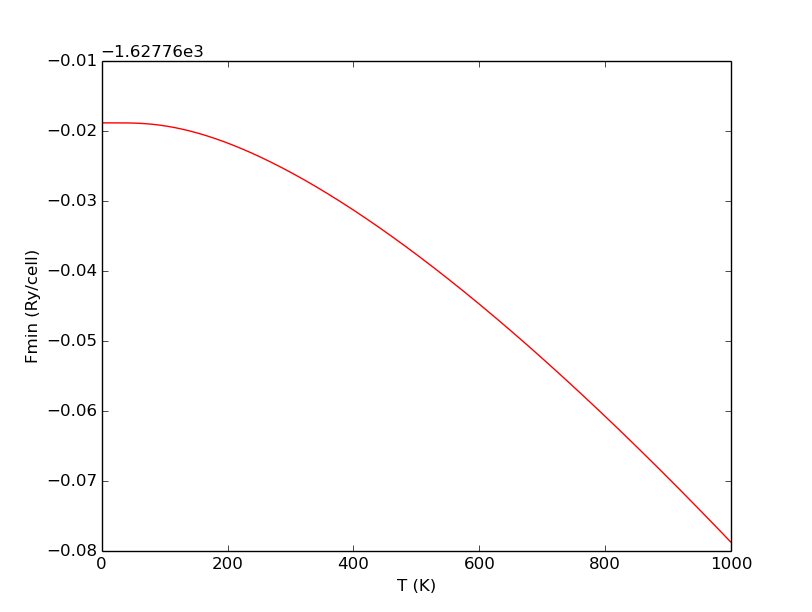 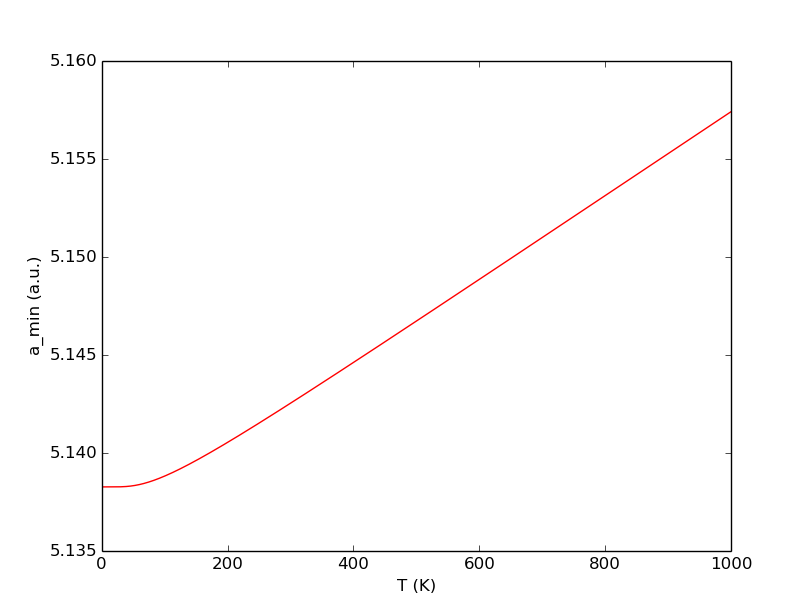 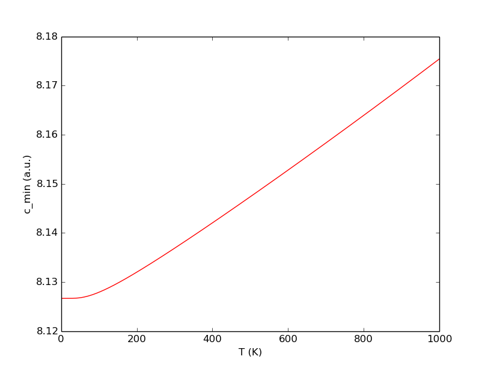 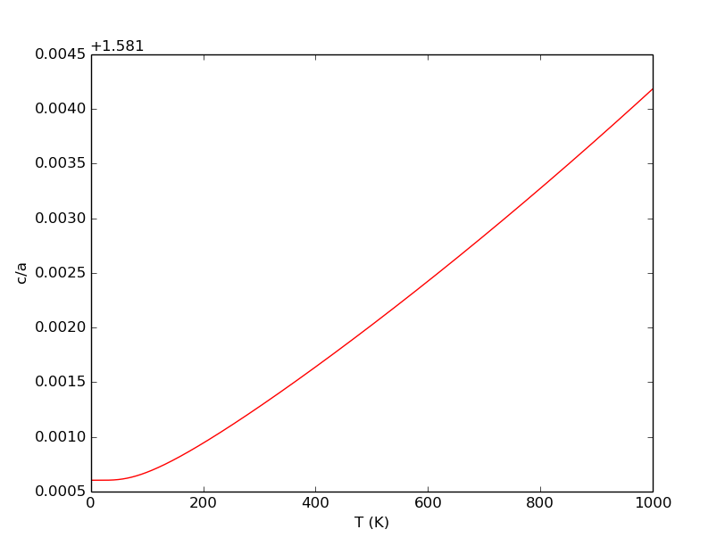 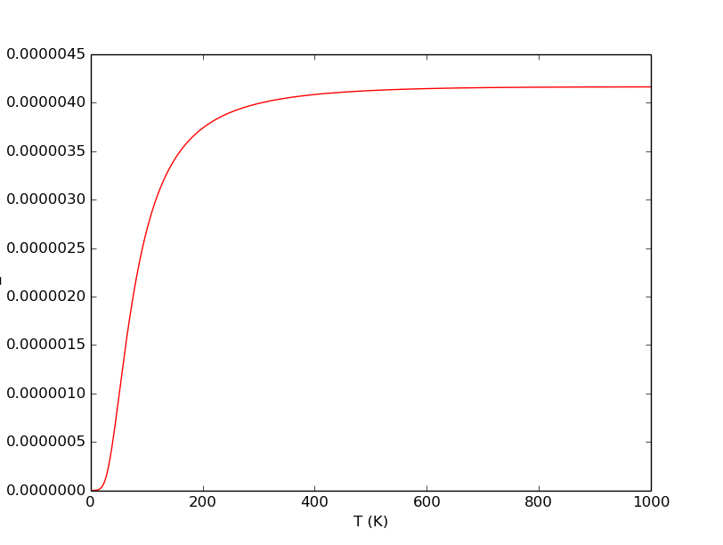{kind=link}
{kind=link}
{kind=link}
{kind=link}
{kind=link}

Computing quasi-static elastic constants (example 7)¶
The following code example shows how to do a calculation of a quasi-static elastic tensor as a function of temperature for an hexagonal system. This kind of calculation requires that a quasi-harmonic calculation has already be done (as in example 6). Besides, the elastic constants for different values must be available. To compute these elastic constants you can use for example the thermo_pw code [1].
from pyqha import RY_KBAR
from pyqha import gen_TT, read_Etot, read_dos_geo, compute_thermo_geo, read_thermo, rearrange_thermo, fitFvib, write_celldmsT, write_alphaT
from pyqha import simple_plot_xy, multiple_plot_xy
from pyqha import read_elastic_constants_geo, write_C_geo, write_CT, rearrange_Cx, fitCxx, fitCT
fEtot = "./Etot.dat"
celldmsx, Ex = read_Etot(fEtot) # since the fitFvib does not return Etot data, you must read them from the original file
# this part is for calculating the thermodynamic properties from the dos
fdos="dos_files/output_dos.dat.g" # base name for the dos files (numbers will be added as postfix)
fthermo = "thermo" # base name for the output files (numbers will be added as postfix)
ngeo = 25 # this is the number of volumes for which a dos has been calculated
#TT =gen_TT(1,1000) # generate the numpy array of temperatures for which the properties will be calculated
#T, Evib, Fvib, Svib, Cvib, ZPE, modes = compute_thermo_geo(fdos,fthermo,ngeo,TT)
#nT = len(T)
# Alternatively, read the thermodynamic data from files if you have already
# done the calculations
T1, Evib1, Fvib1, Svib1, Cvib1 = read_thermo( fthermo, ngeo )
nT, T, Evib, Fvib, Svib, Cvib = rearrange_thermo( T1, Evib1, Fvib1, Svib1, Cvib1, ngeo )
fEtot = "./Etot.dat"
thermodata = nT, T, Evib, Fvib, Svib, Cvib
TT, Fmin, celldmsminT, alphaT, a0, chi, aT, chi = fitFvib(fEtot,thermodata,typeEtot="quartic",typeFvib="quartic",defaultguess=[5.12374914,0.0,8.19314311,0.0,0.0,0.0])
# Now start the quasi-static calculation
fC = "./elastic_constants/output_el_cons.g"
# Read the elastic constants and compliances from files
Cx, Sx = read_elastic_constants_geo(fC, ngeo)
Cxx = rearrange_Cx(Cx,ngeo) # rearrange them in the proper order for fitting
# Optionally save them
write_C_geo(celldmsx, Cxx, ibrav=4, fCout="./elastic_constants/")
# Fit the elastic constants as a function of celldmsx
aC, chiC = fitCxx(celldmsx, Cxx, ibrav=4,typeC="quadratic")
T, CT = fitCT(aC, chiC, TT, celldmsminT, ibrav=4, typeC="quadratic")
write_CT(TT,CT,fCout="./elastic_constants/")
fig1 = simple_plot_xy(TT,CT[:,0,0],xlabel="T (K)",ylabel="C11 (kbar)")
fig2 = simple_plot_xy(TT,CT[:,0,1],xlabel="T (K)",ylabel="C12 (kbar)")
fig3 = simple_plot_xy(TT,CT[:,0,2],xlabel="T (K)",ylabel="C13 (kbar)")
fig4 = simple_plot_xy(TT,CT[:,2,2],xlabel="T (K)",ylabel="C33 (kbar)")
fig1.savefig("figure_1.png")
fig2.savefig("figure_2.png")
fig3.savefig("figure_3.png")
fig4.savefig("figure_4.png")
# plot now 4 elastic constants in the same plot
import numpy as np
pCxx = np.zeros((len(T),4))
pCxx[:,0] = CT[:,0,0]
pCxx[:,1] = CT[:,0,1]
pCxx[:,2] = CT[:,0,2]
pCxx[:,3] = CT[:,2,2]
Clabels = ["C11","C12","C13","C33"]
fig5 = multiple_plot_xy(T,pCxx,xlabel="T (K)",ylabel="Cxx (kbar)",labels=Clabels)
fig5.savefig("figure_5.png")

 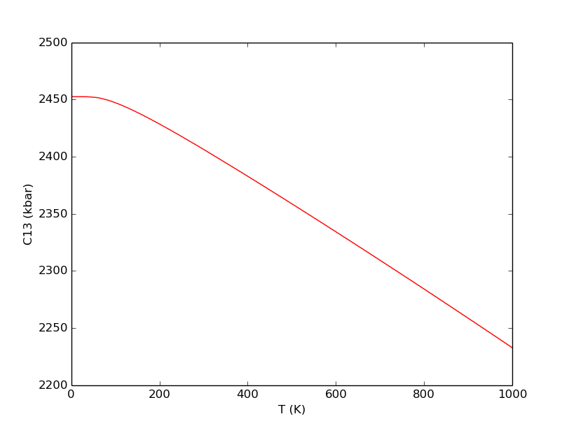
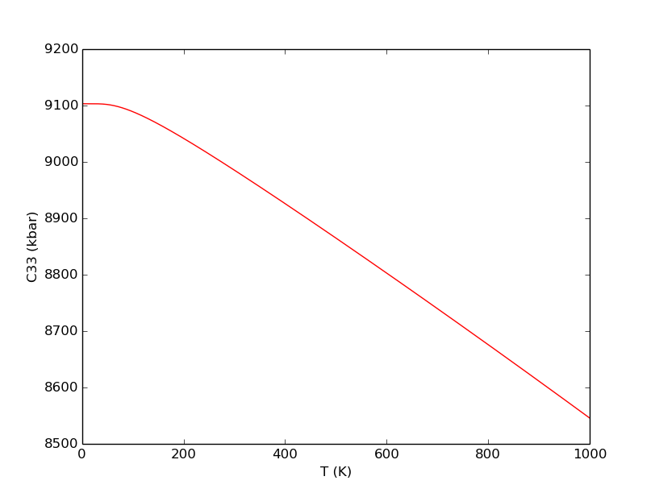
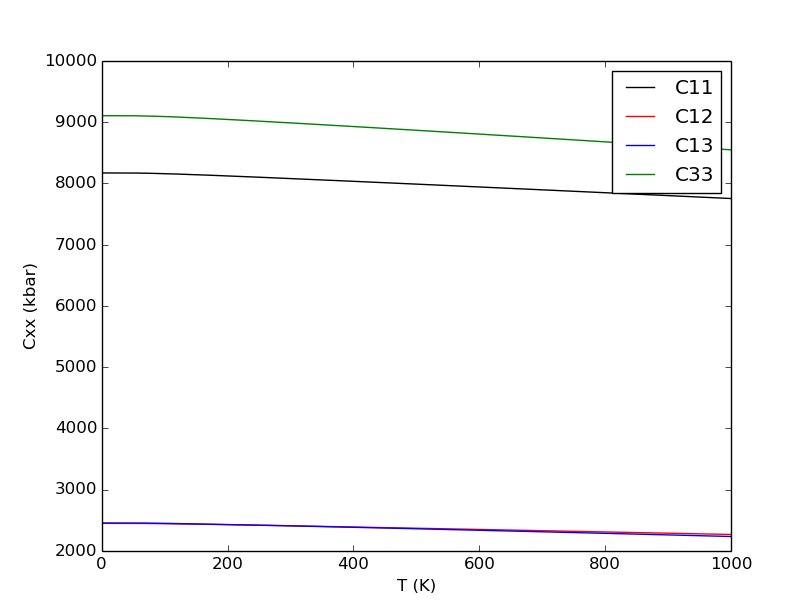
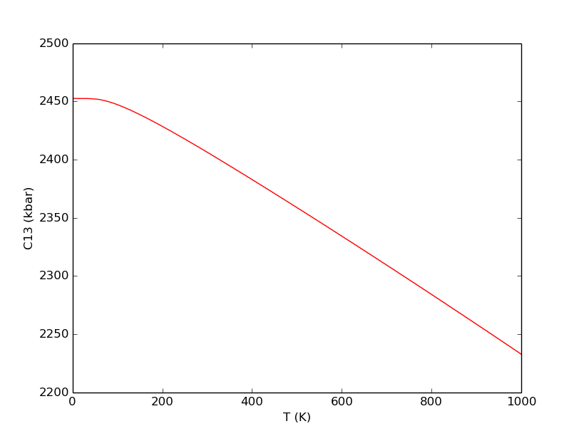
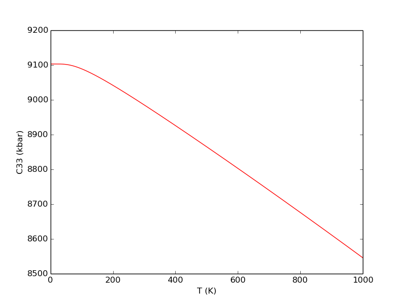
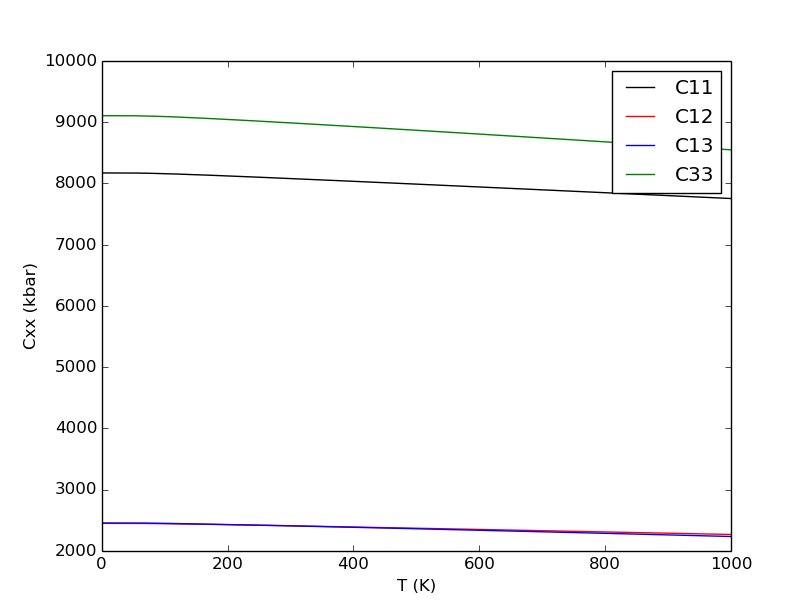
{kind=link}
{kind=link}
{kind=link}
Numerical issues (example 8)¶
It is important to realize that the practical application of the quasi-harmonic approximation relies on fitting and minimizing the free energy as a function of volume, lattice parameters and temperature, ultimately on numerical methods. pyqha uses numpy and scipy functions to this aim. The user must select the best methods/options for the specific system under investigation and it is always better to test, test, test...
The following example shows how different methods/options may lead to different sets of results. Sometimes the differences are within the target numerical precision. Sometimes the results are simply wrong because of an improper choice of the methods/options.
First, let’s compute some example results for a hypotetical hexagonal system, using total energy and phonon DOS for different values of lattice parameters. We use all default values of the function fitFvib(), i.e. a quadratic polynomial for fitting the total energies, a quadratic polynomial for fitting the vibrational energies, BFGS algorithm for minimization with default options (see the documentation of scipy.optimize.minimize for more details).
from pyqha import RY_KBAR
from pyqha import gen_TT, read_Etot, read_dos_geo, compute_thermo_geo, read_thermo, rearrange_thermo, fitFvib, write_celldmsT, write_alphaT
from pyqha import simple_plot_xy, plot_Etot, plot_Etot_contour, multiple_plot_xy
import numpy as np
# this part is for calculating the thermodynamic properties from the dos
fdos="dos_files/output_dos.dat.g" # base name for the dos files (numbers will be added as postfix)
fthermo = "thermo" # base name for the output files (numbers will be added as postfix)
ngeo = 25 # this is the number of volumes for which a dos has been calculated
#TT =gen_TT(1,2000) # generate the numpy array of temperatures for which the properties will be calculated
#T, Evib, Fvib, Svib, Cvib, ZPE, modes = compute_thermo_geo(fdos,fthermo,ngeo,TT)
#nT = len(T)
# Alternatively, read the thermodynamic data from files if you have already
# done the calculations
T1, Evib1, Fvib1, Svib1, Cvib1 = read_thermo( fthermo, ngeo )
nT, T, Evib, Fvib, Svib, Cvib = rearrange_thermo( T1, Evib1, Fvib1, Svib1, Cvib1, ngeo )
fEtot = "./Etot.dat"
thermodata = nT, T, Evib, Fvib, Svib, Cvib
# Fit and minimize with default options, quadratic polynomials for both Etot and Fvib, minimization method="BFGS", minoptions={'gtol': 1e-5}
#TT, Fmin, celldmsminT, alphaT, a0, chi, aT, chiT = fitFvib(fEtot,thermodata)
res1 = fitFvib(fEtot,thermodata)
fig1 = simple_plot_xy(res1[0],res1[2][:,0],xlabel="T (K)",ylabel="a_min (a.u.)")
fig2 = simple_plot_xy(res1[0],res1[2][:,2],xlabel="T (K)",ylabel="c_min (a.u.)")
fig3 = simple_plot_xy(res1[0],res1[3][:,0],xlabel="T (K)",ylabel="alpha_xx (1/K)")
fig4 = simple_plot_xy(res1[0],res1[3][:,2],xlabel="T (K)",ylabel="alpha_zz (1/K)")
Running the above code and observing the results below, you can notice that the thermal expansions present some spikes. These quantities are obtained as numerical derivatives of the lattice parameters and are thus more sensitive to any numerical noise. The default convergence criterium, minoptions={‘gtol’: 1e-5}, for the minimization BFGS algorithm is not sufficient to obtain good results.


Let’s see what happens if we now systematically increase gtol, using the same minimization method (BFGS):
# Fit and minimize with quadratic polynomials for both Etot and Fvib, minimization method="BFGS", increasing gtol
res2 = fitFvib(fEtot,thermodata,method="BFGS",minoptions={'gtol': 1e-6})
res3 = fitFvib(fEtot,thermodata,method="BFGS",minoptions={'gtol': 1e-7})
res4 = fitFvib(fEtot,thermodata,method="BFGS",minoptions={'gtol': 1e-8})
# plot together the 3 resulting thermal expansions
y = np.zeros((len(res1[0]),3))
y[:,0] = res2[2][:,0]
y[:,1] = res3[2][:,0]
y[:,2] = res4[2][:,0]
fig5 = multiple_plot_xy(res1[0],y,xlabel="T (K)",ylabel="a_min (a.u.)",labels=["1e-6","1e-7","1e-8"])
y[:,0] = res2[2][:,2]
y[:,1] = res3[2][:,2]
y[:,2] = res4[2][:,2]
fig6 = multiple_plot_xy(res1[0],y,xlabel="T (K)",ylabel="c_min (a.u.)",labels=["1e-6","1e-7","1e-8"])
y[:,0] = res2[3][:,0]
y[:,1] = res3[3][:,0]
y[:,2] = res4[3][:,0]
fig7 = multiple_plot_xy(res1[0],y,xlabel="T (K)",ylabel="alpha_xx (1/K)",labels=["1e-6","1e-7","1e-8"])
y[:,0] = res2[3][:,2]
y[:,1] = res3[3][:,2]
y[:,2] = res4[3][:,2]
fig8 = multiple_plot_xy(res1[0],y,xlabel="T (K)",ylabel="alpha_zz (1/K)",labels=["1e-6","1e-7","1e-8"])
The results of the above code are shown here:


As you can see, the thermal expansions are getting better, but there is still some noise at high temperature, even with the slowest gtol. If you try the “Newton-CG” algorithm you can finally get rid of these spikes.
Let’s see now what happens if we now use different polynomial forms for fitting, but the same minimization method (Newton-CG) and convergence criterium, minoptions={‘gtol’: 1e-7}.
# Refit the quadratic polynomial for Etot and quadratic for Fvib, default minimization method="Newton-CG", higher minoptions={'gtol': 1e-7}
res5 = fitFvib(fEtot,thermodata,method="Newton-CG",minoptions={'gtol': 1e-7})
# Fit the quartic polynomial for Etot and quadratic for Fvib, default minimization method="Newton-CG", higher minoptions={'gtol': 1e-7}
res6 = fitFvib(fEtot,thermodata,method="Newton-CG",typeEtot="quartic",minoptions={'gtol': 1e-7})
# Fit the quartic polynomial for Etot and quartic for Fvib, default minimization method="Newton-CG", higher minoptions={'gtol': 1e-7}
res7 = fitFvib(fEtot,thermodata,method="Newton-CG",typeEtot="quartic",typeFvib="quartic",minoptions={'gtol': 1e-7})
# plot together the 3 resulting lattice parameters and thermal expansions
y[:,0] = res5[2][:,0]
y[:,1] = res6[2][:,0]
y[:,2] = res7[2][:,0]
fig9 = multiple_plot_xy(res1[0],y,xlabel="T (K)",ylabel="a_min (a.u.)",labels=["quad+quad fit","quart+quad fit","quart+quart fit"])
y[:,0] = res5[2][:,2]
y[:,1] = res6[2][:,2]
y[:,2] = res7[2][:,2]
fig10 = multiple_plot_xy(res1[0],y,xlabel="T (K)",ylabel="c_min (a.u.)",labels=["quad+quad fit","quart+quad fit","quart+quart fit"])
y[:,0] = res5[3][:,0]
y[:,1] = res6[3][:,0]
y[:,2] = res7[3][:,0]
fig11 = multiple_plot_xy(res1[0],y,xlabel="T (K)",ylabel="alpha_xx (1/K)",labels=["quad+quad fit","quart+quad fit","quart+quart fit"])
y[:,0] = res5[3][:,2]
y[:,1] = res6[3][:,2]
y[:,2] = res7[3][:,2]
fig12 = multiple_plot_xy(res1[0],y,xlabel="T (K)",ylabel="alpha_zz (1/K)",labels=["quad+quad fit","quart+quad fit","quart+quart fit"])


You can see that the fit with quadratic polynomials for both Etot and Fvib (quad+quad) gives a slightly different result, especially at 0 K, with a difference of the order of 0.2%. Some minor differences remain even when using quadratic/quartic or quartic/quartic polynomials. In general, a quartic polynomial is expected to provide a better fit, but care must be paid to avoid overfitting and the best choice also depends on the shape of your energy surface.
Finally, let’s see another numerical issue in quasi-harmonic calculations which is illustrated in the following code and figures:
# The minimum shifts with temperature, so does the quality of the fit (for example the chi^2)
celldmsx, Ex = read_Etot(fEtot) # since the fitFvib does not return Etot data, you must read them from the original file
iT=1 # this is the index of the temperatures array, not the temperature itself
print("T= ",res7[0][iT]," (K)")
# 2D contour plot with fitted energy (Etot+Fvib)
fig13 = plot_Etot_contour(celldmsx,nmesh=(50,0,50),fittype="quartic",ibrav=4,a=res7[4]+res7[6][iT])
iT=1998 # this is the index of the temperatures array, not the temperature itself
print("T= ",res7[0][iT]," (K)")
# 2D contour plot with fitted energy (Etot+Fvib)
fig14 = plot_Etot_contour(celldmsx,nmesh=(50,0,50),fittype="quartic",ibrav=4,a=res7[4]+res7[6][iT])
# plot the chi^2 as a function of temperature
fig15 = simple_plot_xy(res7[0],res7[5]+res7[7],xlabel="T (K)",ylabel="chi^2")


The first two figures above show iso-contour lines for the  surface at T=1 K and T=1999 K. You can see that the minimum is shifting as expected because of thermal expansion (usually positive) and as a consequence it becomes closer to the boundary of the chosen grid. It is important to check that the minimun does not get too close to the boundary in order to avoid a serious decrease of the fit accuracy. In any case, the of the fitting procedure is always slightly changing (usually increasing) with temperature, as shown in the last figure.
surface at T=1 K and T=1999 K. You can see that the minimum is shifting as expected because of thermal expansion (usually positive) and as a consequence it becomes closer to the boundary of the chosen grid. It is important to check that the minimun does not get too close to the boundary in order to avoid a serious decrease of the fit accuracy. In any case, the of the fitting procedure is always slightly changing (usually increasing) with temperature, as shown in the last figure.
| [1] | http://qeforge.qe-forge.org/gf/project/thermo_pw/ |